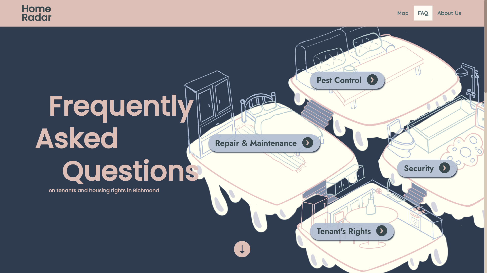
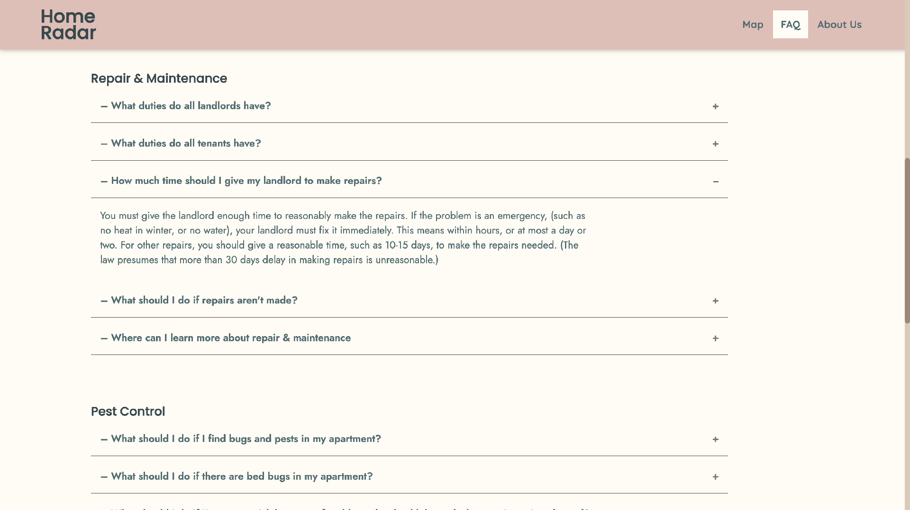
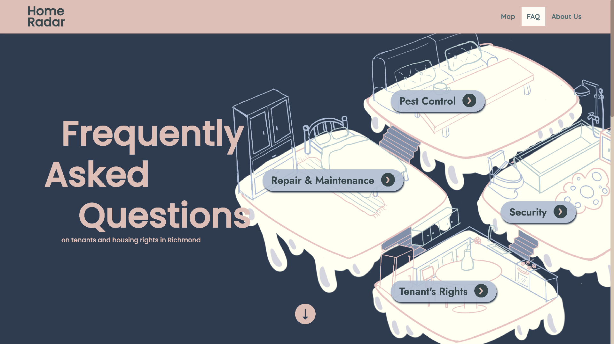
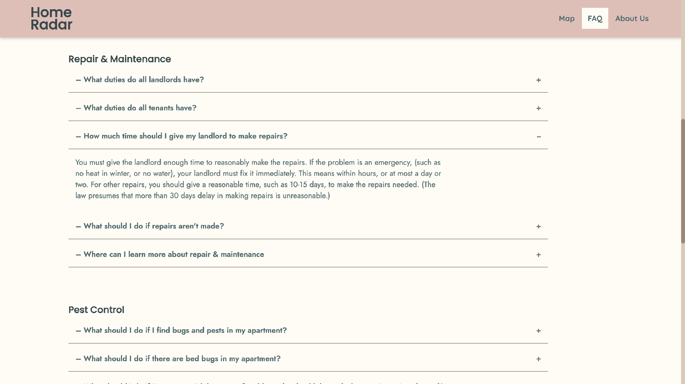

Home Radar
Rethinking apartment hunting in Richmond, Virginia

outcome: Hand-coded Website
role: web design, UX design, front and back end development
tools:
CSS HTML JS Jekyll GitHub Pages
time period: August, 2022 – December, 2022
view the Home Radar website
project summary:
A website with a human-centered approach to apartment hunting, built for students of Virginia Commonwealth University (VCU), by students at VCU
the problem
what are the problems students of VCU facing when looking for adequate housing?
As a part of my Human-Centered Design class, we had to find a problem in Richmond, VA that we were passionate about creating solutions for. I was interested in inadequate housing in and around Richmond, especially for students and those living on and around VCU campus. After coming up with that idea, I created a presentation for the class proposing we find solutions for inadequate housing in Richmond, VA. For my presentation, I came up with the initial problem statement:
"Housing should be safe, clean, affordable, and accessible, but it can be extremely difficult to find that in Richmond."
As with any problem statement, it changed and grew as we learned more about our problem, the user, and their needs.
"Unsafe, unhealthy, and unaffordable housing options plague Richmond."
initial research
First, my team and I created a research plan of action, beginning with desk research, then moving on to surveys and interviews with possible users. I began with researching housing options around Richmond and VCU campus and compiled them into a google sheet

For each apartment, I collected information about the average cost of rent for each of their bedroom options from studio to four bed. I also took note of other things that would be a monthly cost, such as whether utilities or wifi were covered in the rent.
I looked at important factors for many people when selecting an apartment, such as AC, in-unit laundry machines versus laundry facilities, or whether they provide parking (or charge additionally for it). I also took note of amenities each apartment provided, such as pets, secure entry, fitness centers, balconies, natural lighting, space, proximity to campus, and more.
When I was unable to find specific information online, I called the apartment management and acted like a potential resident. If they didn't answer multiple of my calls or return my call from voicemaills, I also factored that into the quality of the management.
Then, I went through multiple sites to find reviews for each apartment and narrowed them down to only reviews posted in the past few years. I took note of changes in their reviews over the years, whether they improved or worsened, and what problems were consistent. I wrote down common problems people mentioned in their reviews and took extra care to interpret the quality of the management, the expediency and quality of maintenance and repairs, and the presence of problems of health and safety such as leaks and pests.
surveys and interviews
what does the user need?
the MVP
prototypes
final outcome


 


